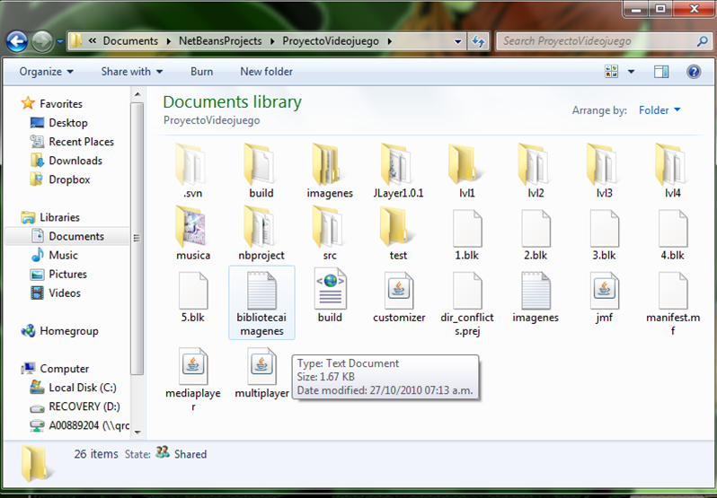
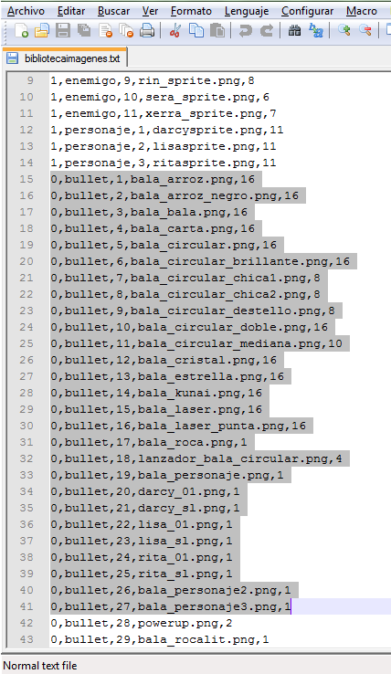

Phi Rainfall has the posibility to modify or create your own levels as an easy manner.
To create a level for Phi Rainfall you must understand that each level for it's own consist in several blocks.
Blocks help to group 10 seconds of the game into a level.
The file format for the blocks is the next:
1.-The block begins with a number "n", symbolizing the number of enemies to create.
2.-The file continues with "n" lines. Each specifies the characteristics of an enemy:
Move the enemy, the enemy image, shot selection, type of bullet (image), color image
Example:
3
1,2,3,3,4
3,1,4,5,6
5,2,4,3,7
For the characteristics of a line is the next:
Move the enemy: This specifies the movement of the enemy the range of movement comes from 1 to 9 the explanation is the next:
1:Makes a movement that starts from the left side of the screen and advances in horizontal way, then it gets into a point where changes it's movement in vertical to the highest part of the screen.
2:Makes a movement that starts from the right side of the screen and advances in horizontal way, then it gets into a point where changes it's movement in vertical to the highest part of the screen.
3:Makes a diagonal movement appearing in the left side of the screen to the top side of the screen.
4:Makes a diagonal movement appearing in the right side of the screen to the top side of the screen.
5:Makes an horizontal movement appearing in the left side of the screen to the right side of the screen.
6:Makes an horizontal movement appearing in the right side of the screen to the left side of the screen.
7:Makes a vertical movement appearing in the highest part of the screen to the lowest part.
8:Makes a vertical movement appearing in the lowest part of the screen to the highest part.
Enemy image:
The range of the image goes from 1 to 4. Escentially it only changes the color of the fairies because it's the same type of image.
Shot selection:
This element performs the type of bullet the enemy will launch. The range comes from 1 to 7:
1:Bullet Direct-This kind of bullet attacks directly to the player, each bullet goest where the actual player is.
2:Bullet Direct Variable Destiny-This kind of bullet appears in a random point of the screen and starts to launch several bullets in form of a rain.
3:Bullet Elipse-This kind of bullet makes an elipse that increments its radius until it goes outside of the screen or kills the player.
4: Bullet Inverse Elipse-This kind of bullet makes an elipse that starts from outside the window and decreases its radius. When it gets to the center point it exchanges the radius from decrement to incrmenet becoming a normal elipse.
5: Bullet Laser-This bullet creates a line that comes from the highest part of the screen to the lowest part of the screen and if used the image laser.png remakes a laser that can be used in several ways.
6: Bullet Ring-This kind of bullet makes a circle that increments its radius until it goes outside of the screen or kills the player.
7: Bullet Inverse Ring-This kind of bullet makes an ring that starts from outside the window and decreases its radius. When it gets to the center point it exchanges the radius from decrement to incrmenet becoming a normal ring.
Type of bullet:
To view which number corresponds to what image you must open the file "bibliotecaimagenes.txt":

After this you must open the folder "/imagenes" and from here you can match which images you could use with the termination or word bullet in the name of the image. This returns the number that is used in the block:

The lines as shown for example is:
0,bullet,17,bala_roca.png,1
In this example if the image you want to use is rock you must type in the block (17)
So for each type of bullet the range between the images comes from 1 to 17.
Color Image:
The next image shows how a bullet is distributed for its colors:
To select the color of an image you must count from left to right beginning with 0 and that will be the number to use.
Example:
The required bullet is the red one so using the previous context it will be:
2
The required bullet is the cyan one:
7
For all that was explained you can modify or create your own levels
One of the important thing is that you can overwrite the folder with lvl(X) son it will influence directly to the level.
Enjoy!!!